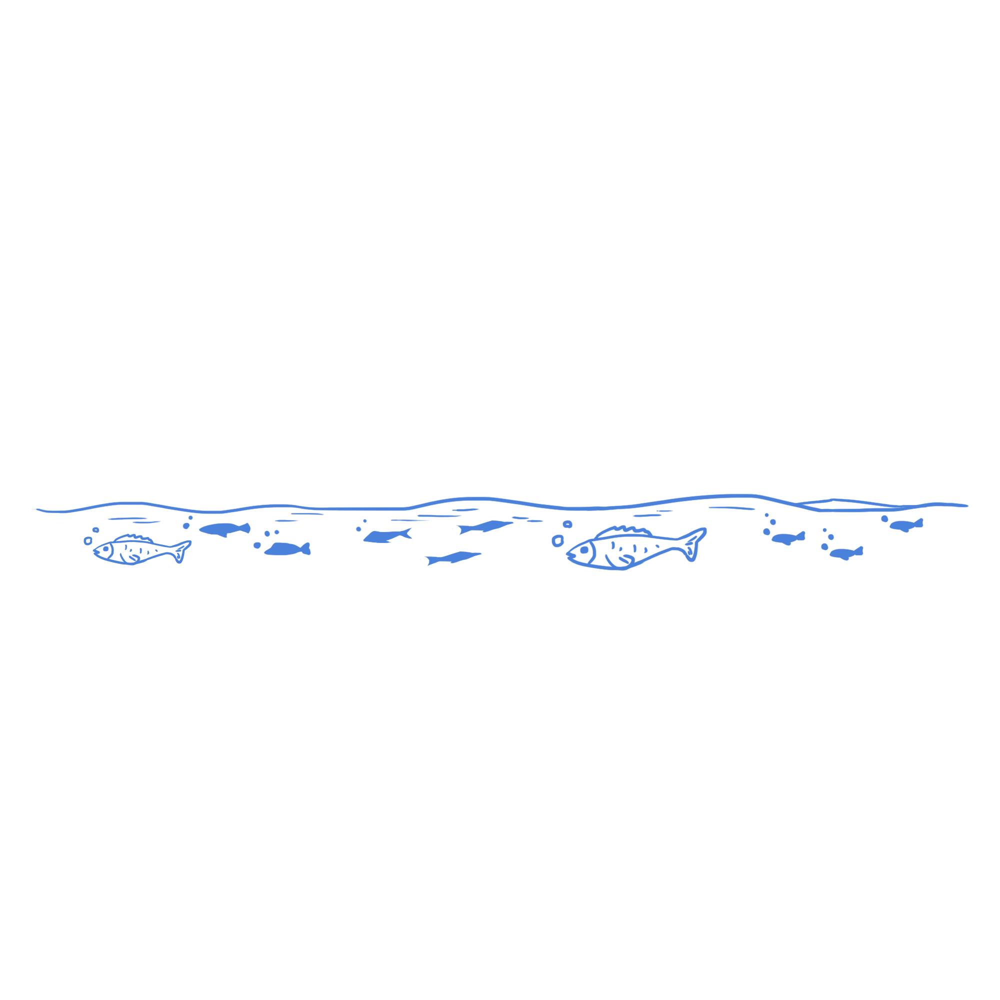

Hello! I'm Jessica Vo
About Me
I'm a senior in the Creative Technology & Design program at University of Colorado Boulder. I strive to utilize my creative skillsets to better the developing world of media, constantly seeking to merge creativity and innovation in my projects. As someone passionate about UX/UI design, I enjoy learning more about problem solving in creative ways. I hope to utilize my skillsets to create an impact on user experiences.
Education
2022-2025 | University of Colorado Boulder
BS-Creative Technology and Design
2021-2022 | Community College of Aurora
Associates of Arts
Relevant Coursework
Intro to Programming C++
Fall 2022
Engineering Projects
Fall 2022
Data Structures
Summer 2023
Design Foundations
Fall 2023
Web
Fall 2023
Text
Spring 2024
Object
Spring 2024
Form
Spring 2024